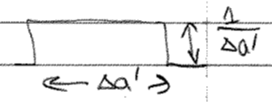
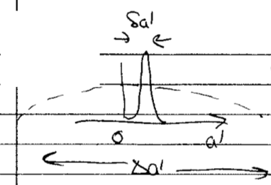
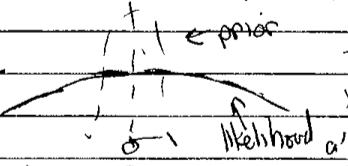

5.2. Lecture 15#
Recap of evidence ratio#
Review the evidence ratio calculation from the last lecture:
\[\begin{split}\begin{align} \frac{p(A|D,I)}{p(B|D,I)} &= \frac{p(D|A,I)\,p(A|I)\,[p(D|I)]^{-1}} {p(D|B,I)\,p(B|I)\,[p(D|I)]^{-1}} \\ &= \frac{p(D|A,I)}{p(D|B,I)}\frac{p(A|I)}{p(B|I)} , \end{align}\end{split}\]where we have canceled the denominators in the ratio. If model \(A\) depends of the parameters \(\thetavec\), then
\[ p(D|A,I) = \int p(D,\thetavec|A,I)d\thetavec = \int p(D|\thetavec,A,I) p(\thetavec|A,I)\,d\thetavec \]where the second integral has an integration over all parameters of the usual likelihood times the prior for those particular parameters.
Model \(A\) will have greater evidence than model \(B\) when the peak of the likelihood increases more than the ratio for the after-data to pre-data vollume of the parameter. The latter is the Occam factor.
For nested models, when going to a more inclusive model, the question is whether the improvement in likelihood out-weighs the penalty from shrinkage of the parameter phase space.
Evidence for model EFT coefficients#
Problem: In the toy model example for model selection, the evidence is highly sensitive to the prior. One solution is to establish a clear criterion that determines the prior.
For the model EFT problem: apply an informative prior from EFT naturalness.
The notebook Evidence calculation for EFT expansions illustrates how this works using the toy model of mini-project I.
Vis-a-vis the von Neumann quote: we will constrain the range of higher-order parameters to prevent elephant fitting.
A note on the term “models”: EFT is said to be model-independent because it uses the most general form of the Lagrangian consistent with the symmetries of the underlying physics \(\Lra\) there are no extra assumptions.
In the general statistics context, a “model” is any theoretical construct for computing an observable.
Model selection in the EFT context could be with models having different degrees of freedom (e.g. nucleons only, nucleons-plus-pions, nucleons-plus-\(\Delta\)s-plus pions) or for different orders in the same EFT (cf. the model problem).
The second example is demonstrated in the paper with the toy model.
The first is still a frontier problem in nuclear physics.
Look at the punch line (last figure) in Evidence calculation for EFT expansions and try to explain it. Return to the details later.
Note
Play with the effects of changing the range of data, the relative error, and the number of data points.
Revisit the two model discussion#
So consider models \(M_1\) and \(M_2\), with the same dataset \(D\).
As before, for the evidence \(p(M_1|D,I)\) versus \(p(M_2|D,I)\) there is no reference to a particular parameter set \(\Lra\) it is a comparison between two models, not two fits.
As already noted, in Bayesian model selection, only a comparison makes sense. One does not deal with a hypothesis like: “Model \(M_1\) is correct.”
Here we will take \(M_2\) to be \(M_1\) with one extra order (one additional parameter) eventually.
Apply Bayes’ theorem:
\[ \frac{p(M_2|D,I)}{p(M_1|D,I)} = \frac{p(D|M_2,I)p(M_2,I) / p(D|I)}{p(D|M_1,I) p(M_1,I) / p(D|I)} \]where as before the denominators cancel. We’ll take the ratio \(p(M_ 2|I)/p(M_1,I)\) to be one.
Thus we have:
(5.1)#\[ \frac{p(M_2|D,I)}{p(M_1|D,I)} = \frac{\int d\avec_2\, p(D|\avec_2,M_2,I)p(\avec_2|M_2,I)} {\int d\avec_1\, p(D|\avec_1,M_1,I)p(\avec_1|M_1,I)} \]where we’ve made the usual application of the product rule in the marginalization integral in numerator and denominator.
The integration is over the entire parameter space.
This is difficult numerically because likelihoods are usually peaked but can have long tails that contribute to the integral (cf. averaging over the likelihood vs. finding the peak).
Consider the easiest example: \(M_1 \rightarrow M_k\) and \(M_2 \rightarrow M_{k+1}\), where \(k\) is the order in an EFT expansion. The question is then: Is going to a higher-order favored by the given data?
To further simplify, assume \(M_{k+1}\) has one additional parameter \(a'\) and assume the priors factorize. For example they are Gaussians:
\[ e^{-\avec^2/2\abar^2} = e^{-a_0^2/2\abar^2}e^{-a_1^2/2\abar^2} \cdots e^{-a_k^2/2\abar^2} . \]Then
\[ p(\avec_2|M_{k+1}, I) = p(\avec_1,a'|M_{k+1},I) = p(\avec_1|M_{k+1},I) p(a'|M_{k+1},I) \]
Consider cases …
i) values of \(a'\) that contribute to the integrand in the numerator of (5.1) are determined by the likelihood peaked region. E.g., recall
{kind=link}
How can we approximate this? Take \(p(a'|M_{k+1},I)\)
{kind=link}
Call the value of the likelihood peak \(\hat a\) and the width \(\delta a'\). So two different widths: the before-data \(\Delta a'\) (width of prior) and the after-data \(\delta a'\) (likelihood \(\rightarrow\) posterior). Do the \(a'\) integral:
with \(\delta a'\) from the integral over \(a'\) (leaving the peak value \(\hat a'\) in the numerator integral over \(\avec_1\)) and \(\Delta a'\) from \(p(a'|M_{k+1},I)\).
Therefore the ratio of the integrals is the gain in the likelihood from an extra parameter with value \(\hat a\) (cf. \(M_{k+1}(\hat a'=0) = M_k\)).
But also the “Occam factor” or “Occam penalty” \(\delta a'/\Delta a'\).
How much parameter space collapses in the face of data. We thought initially that \(a'\) could be anywhere in \(\Delta a'\), but find after the data that it is only in \(\delta a'\). What a waste (less predictive) if \(\delta a' \ll \Delta a'\).
These factors play off each other: if we add a parameter to a nested model, we expect to gain because \(\hat a'\) is more information (it could be \(a'=0\) instead).
Now if this is the case:
The \(a'=0\) likelihood is \(\ll\) the \(a'=\hat a'\) likelihood \(\Lra\) evidence ratio \(\gg 1\) and inclusion of this parameter is highly favored. Unless you put a flat prior from near \(-\infty\) to near \(+\infty\). But we have a natural prior, so \(\Delta a'\) is restricted.
ii) Now suppose:
Turn the analysis on its head. The dependence on \(a'\) is weak because of the width of the likelihood, so we can replace it in \(p(D|\avec_1,a',M_{k+1},I)\) by \(\hat a\):
\[ \Lra \frac{p(D|M_{k+1},I)}{p(D|M_k)} \approx \frac{\int d\avec_1\, p(D|\avec_1,\hat a', M_{k+1},I) p(\avec_1|M_{k+1}, I) \int da' p(a'|M_{k+1}, I)} {\int d\avec_1\, p(D|\avec_1,M_{k},I) p(\avec_1|M_{k}, I)} \]The second integral in the numerator is now just a normalization integral, so it yields one.
Further, we can take \(\hat a' \approx 0\) because we are dominated by the prior. But \(M_{k+1}\) with \(\hat a'=0\) is \(M_k\)! This means that the Bayes ratio in this situation goes to one rather than decreasing.
The same argument applies to \(k+1 \rightarrow k_2 \rightarrow \ldots\) \(\Lra\) we have saturation of the \(a_k\)’s.
Summary: a naturalness prior cuts down on wasted space in the parameter phase space that might be ruled out by data.
Thus an EFT is a simpler model (in the model selection sense) than the same functional form with uncontrained or only weakly constrained LECs.
{kind=link}
{kind=link}
Predict based on your own experience: How does this behavior change if we have more data (higher energy) or more certain data?
[fill in your answer!]
Evidence with linear algebra#
Return to the notebook to look at the calculation of evidence with Python linear algebra.
The integrals to calculate are Gaussian in muliple variables: \(\avec = (a_0, \ldots, a_k)\) plus \(\abar\).
We can write them with matrices (see Lecture 13 notes).
\[ \chi^2 = [Y - A\thetavec]^\intercal\, \Sigmavec^{-1}\, [Y - A\thetavec] \]where
\[\begin{split} Y - A\thetavec = \underbrace{\pmatrix{y_1 \\ y_2 \\ \vdots \\ y_N}}_{N\times 1} - \underbrace{\pmatrix{1 & x_1 & x_1^2 & \cdots & x_1^k \\ 1 & x_2 & x_2^2 & \cdots & x_2^k \\ \vdots & \vdots & \ddots & \vdots & \vdots \\ 1 & x_N & x_N^2 & \cdots & x_N^k}}_{N\times (k+1)} \underbrace{\pmatrix{a_0 \\ a_1 \\ a_2 \\ \vdots \\ a_k}}_{(k+1)\times 1} \end{split}\]and
\[\begin{split} \Sigma = \underbrace{\pmatrix{\sigma_{1}^2 & \rho_{12}\sigma_{1}\sigma_{y_2} & \cdots & \rho_{1N}\sigma_{1}\sigma_{N} \\ & \sigma_{2}^2 & \cdots & \cdots \\ & & \ddots & \cdots \\ & & & \sigma_{N}^2 }}_{N\times N} \end{split}\]Then from before we have \(\chi^2_{\text{MLE}}\) when
\[ \widehat\thetavec = (A^\intercal \Sigma^{-1} A)^{-1}(A^\intercal \Sigma^{-1} Y) . \]
Here we have a couple of options:
i) Use
where \(M\) is any symmetric matrix and \(\Bvec\) any vector. Derive this result by completing the square in the exponent (subtract and add \(\frac{1}{2}\Bvec^\intercal M^{-1} \Bvec\)).
ii) Use conjugacy. See the “conjugate prior” entry in Wikipedia for details. Apply this to Bayes’ theorem with a Gaussian prior \(p(\thetavec)\) with \((\mu_0,\sigma_0)\) and a Gaussian likelihood \(p(D|\thetavec)\) with \((\mu,\sigma)\). Then \(p(\thetavec|D)\) is a Gaussian with
Check the \(N\rightarrow \infty\) limit
Then the terms with \(\mu_0\) and \(\sigma_0\) become negligible, and